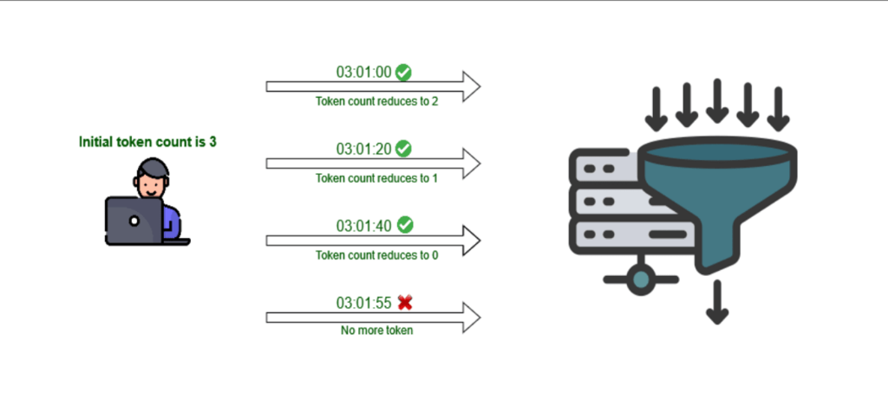

Limitación de Tasa con express-rate-limit y Middlewares
express-rate-limit es un middleware para Express (el popular framework de Node.js para construir aplicaciones web y APIs). Se utiliza para limitar la tasa de solicitudes que un cliente puede realizar a nuestra aplicación, protegiendo nuestro servidor de Videojuegos frente a ataques de denegación de servicio (DoS) y abuso de tráfico.
express-rate-limit, configuras el número máximo de solicitudes permitidas dentro de una ventana de tiempo (por ejemplo, 100 solicitudes por hora o 5 solicitudes por minuto por dirección IP).Si un jugador o bot supera ese límite, el middleware intercepta la petición antes de que llegue al arreglo en memoria y responde automáticamente con el código de estado HTTP 429 Too Many Requests (Demasiadas solicitudes), indicando que debe esperar antes de volver a intentar.

express-rate-limit como middleware.
• Presiona M para alternar entre Modo Diapositivas y Modo Lectura Completa.
• Todo el código tiene el diseño oficial de VS Code Dark+ con salto de línea automático (wrap) para que jamás se corte ni se oculte ninguna línea.
¿Cómo Funciona el Descuento de Tokens y el Embudo HTTP?
Hemos reconstruido el diagrama del funcionamiento de express-rate-limit en alta definición e interactivo para que cada marca de tiempo y transición de tokens se lea con total claridad. Imagina que configuramos max: 3 solicitudes por minuto (Contador inicial de tokens = 3):
GET /api/videojuegosGET /api/videojuegos/1POST /api/videojuegosGET /api/videojuegos (Dentro del mismo minuto)assets/rate-limit-token-flow.png):

Las 8 Características Principales de express-rate-limit
Conoce por qué express-rate-limit es el estándar de la industria para proteger rutas y servidores construidos con Express en Node.js:
windowMs) y el límite máximo de solicitudes (limit / max): por ejemplo, 100 por hora o 5 por minuto.
message) que se enviarán cuando un cliente supere el límite, informando el motivo del rechazo.
app.use() en la cadena de middlewares.
req.ip), evitando abusos, bots de compra o spam desde una IP específica hacia el catálogo de videojuegos.
windowMs y max, proporciona opciones avanzadas para adaptarse a cualquier arquitectura: skip, handler, headers, keyGenerator y store.
req.rateLimit y cabeceras HTTP estándar para proporcionar registros y métricas útiles al monitorear el tráfico de tu API.
Las 14 Opciones de Configuración de express-rate-limit
Explora todas las propiedades de configuración del middleware con enlace directo a la documentación oficial. Usa el buscador para filtrar por nombre o descripción:
| Opción (Link Oficial) | Tipo de Dato | Descripción Pedagógica |
|---|---|---|
| windowMs ↗ | number | Especifica cuánto tiempo recordar las solicitudes, en milisegundos (ej. 60 * 1000 = 1 minuto). Durante este período, las solicitudes se rastrean para verificar si exceden el límite establecido. |
| limit (o max) ↗ | number | function | Es el límite de solicitudes permitidas dentro de la ventana especificada. Puede ser un número fijo (ej. 5) o una función asíncrona/síncrona que devuelve un número dinámico basado en la solicitud (ej. jugadores VIP vs Gratis). |
| message ↗ | string | json | function | Es la respuesta que se enviará después de que se alcance el límite de solicitudes. Puede ser un mensaje de texto plano, un objeto JSON estructurado o una función que genera la respuesta. |
| statusCode ↗ | number | Es el código de estado HTTP que se enviará después de que se alcance el límite. El valor predeterminado es 429 (Too Many Requests / Demasiadas solicitudes). |
| legacyHeaders ↗ | boolean | Cuando está habilitado (true), agrega los encabezados clásicos X-RateLimit-Limit, X-RateLimit-Remaining y X-RateLimit-Reset a la respuesta HTTP. |
| standardHeaders ↗ | 'draft-6' | 'draft-7' | Habilita el encabezado estándar del IETF RateLimit en la respuesta HTTP. Puede configurarse como 'draft-6', 'draft-7' o booleano. |
| requestPropertyName ↗ | string | Agrega información en tiempo real sobre el límite de tasa al objeto de solicitud (req) de Express. Por defecto es req.rateLimit, pero puedes personalizar el nombre de la propiedad. |
| skipFailedRequests ↗ | boolean | Si está habilitado (true), las respuestas con códigos de error 4xx o 5xx no descontarán tokens del límite de tasa del cliente. |
| keyGenerator ↗ | function | Función que identifica de forma única a los usuarios. Por defecto utiliza la dirección IP del cliente (req.ip), pero puedes personalizarla para limitar por API Key o ID de jugador. |
| handler ↗ | function | Función (req, res, next, options) que se ejecuta cuando el cliente alcanza el límite. Puede anular los valores predeterminados de message y statusCode si está configurada. |
| skip ↗ | function | Función (req, res) => boolean que puede devolver true para omitir (saltar) el limitador en solicitudes específicas (ej. IPs internas o administradores). |
| requestWasSuccessful ↗ | function | Se utiliza en conjunto con skipFailedRequests y skipSuccessfulRequests para definir la lógica que determina si una solicitud fue exitosa o no (por defecto res.statusCode < 400). |
| validate ↗ | boolean | object | Habilita o deshabilita las verificaciones de validación integradas de express-rate-limit al iniciar el servidor. Puede ser un booleano o un objeto de opciones. |
| store ↗ | Store | Permite usar un almacenamiento personalizado (por defecto usa memoria RAM local, pero soporta Redis, Memcached o MongoDB) para compartir recuentos de solicitudes entre múltiples servidores. |
2. Instalación, Configuración Básica y Respuestas 429
Primero creamos el directorio del proyecto, inicializamos Node.js e instalamos express y express-rate-limit. Observa cómo se estructura el código en VS Code con cada línea bien separada y adaptada a nuestra tienda de Videojuegos:
429.
max: 3 (3 solicitudes por minuto) y statusCode: 429 (Código de estado HTTP 429 Too Many Requests) junto con el mensaje de protección.
windowMs: 60 * 1000: Define una ventana de 1 minuto (60 segundos × 1000 milisegundos = 60,000 ms).•
max: 3 (o limit: 3): Permite únicamente 3 solicitudes por minuto desde la misma dirección IP.•
message: Mensaje personalizado que recibe el jugador cuando alcanza el límite de solicitudes.•
statusCode: 429: Código de estado HTTP oficial que indica Demasiadas solicitudes.•
app.use(limiter): Registra y aplica el middleware a todas las solicitudes entrantes del servidor.
2.2. Encabezados (Headers) y 2.3. Protección de la API
Además de bloquear abusos, express-rate-limit puede enviar encabezados HTTP informativos al cliente y aplicarse selectivamente solo a las rutas que comiencen con /api/:
max: 2 y headers: true (o legacyHeaders: true + standardHeaders: 'draft-7'), el servidor informa en cada respuesta cuántos intentos le quedan al jugador.
app.use('/api/', apiLimiter) protegemos únicamente los endpoints de nuestra API de videojuegos (como /api/videojuegos) con un límite de 5 solicitudes por minuto.
X-RateLimit-Limit: 5 → Total de solicitudes permitidas en la ventana de 1 minuto.•
X-RateLimit-Remaining: 4 → Tokens o solicitudes restantes antes del bloqueo 429.•
X-RateLimit-Reset: 1760878860 → Marca de tiempo en segundos en la que se reiniciarán los tokens.•
RateLimit: limit=5, remaining=4, reset=60 → Formato estándar moderno IETF (draft-7).
3. Configuración del rateLimit como un Middleware Modular
En proyectos profesionales de Campuslands no definimos todos los middlewares amontonados dentro de app.js. Extraemos apiLimiter a su propio archivo modular (por ejemplo, helperLimit.js o src/middlewares/rateLimiter.js) y lo exportamos con export const apiLimiter:
{ rateLimit } desde 'express-rate-limit' y exporta la constante apiLimiter lista para reutilizarse en cualquier ruta.
{ apiLimiter } desde el módulo helper y lo monta con app.use('/api/', apiLimiter) para blindar el catálogo de videojuegos.
import { express } from 'express', pero en versiones reales de Node.js con "type": "module", Express se exporta por defecto, por lo que la forma correcta que evita errores de ejecución es import express from 'express'; (sin llaves), mientras que import { rateLimit } from 'express-rate-limit'; sí utiliza llaves por ser una exportación nombrada.
Construye el Proyecto Completo de Videojuegos (En Memoria)
Ahora uniremos todo lo aprendido en un ejercicio real de Node.js y Express donde la base de datos es un arreglo de videojuegos en memoria (src/data/videojuegos.db.js) protegido por middlewares de Rate Limit, validación y auditoría.
"type": "module" en tu package.json para habilitar import / export:
src/data/videojuegos.db.js: Arreglo en memoria con 4 videojuegos semilla (Zelda, Elden Ring, Hollow Knight Silksong, Cyberpunk 2077).•
src/middlewares/rateLimiter.js: Define apiLimiter (5 req/min para /api/) y crearJuegoLimiter (3 POST/min).•
src/routes/videojuegos.routes.js: Enrutador CRUD completo (GET, POST, PUT, DELETE) que informa en vivo los tokens restantes.👉 ¡Avanza a la siguiente diapositiva para inspeccionar cada archivo línea por línea en VS Code!
Explorador de Código Línea a Línea (Estilo VS Code)
Selecciona cualquiera de los 6 archivos en las pestañas superiores de VS Code. Nunca ocultamos ni recortamos líneas y las líneas largas saltan automáticamente. Haz clic en cualquier línea para leer su explicación pedagógica detallada a la derecha:
Haz clic en cualquier línea de código
express-rate-limit y por qué está escrita de esa manera.
Cómo Correr el Servidor y Disparar el Bloqueo 429 en Local
Una vez tengas los archivos en tu computadora, levanta el servidor y comprueba tanto las operaciones sobre el arreglo de videojuegos como el bloqueo automático de express-rate-limit en la sexta solicitud:
429:
200 OK y la #6 es rechazada con HTTP/1.1 429 Too Many Requests:
Simulador Interactivo: Rate Limiter + CRUD de Videojuegos
Experimenta en tiempo real cómo funciona express-rate-limit sobre nuestro arreglo de videojuegos. Cada petición a /api/videojuegos descuenta un token de tu ventana activa. Cuando los tokens lleguen a 0, el middleware bloqueará tus solicitudes con 429 Too Many Requests hasta que el temporizador se reinicie o pulses Reiniciar Ventana:
express.json() → logger → apiLimiter → validarVideojuego
// Haz clic en "Enviar Solicitud HTTP" o "Simular Ráfaga DoS" para observar la respuesta y el descuento de tokens...
src/data/videojuegos.db.js)
Total: 4 videojuegos
| ID | Título del Videojuego | Género | Plataforma | Precio (USD) | Acción Rápida |
|---|